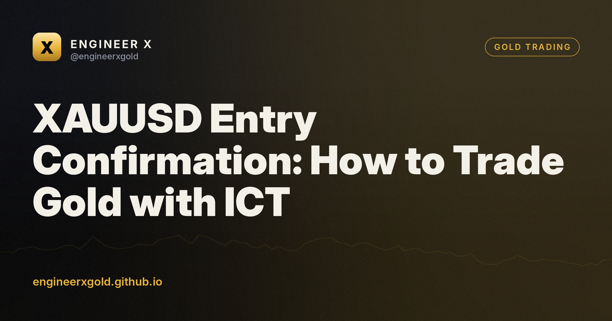

XAUUSD Entry Confirmation: How to Trade Gold with ICT
10 October 2026 · Engineer X educational research

Key takeaways
- Always combine higher timeframe bias with lower timeframe structural triggers for gold trading.
- Order blocks and fair value gaps highlight where institutional activity is likely concentrated.
- Volume Spread Analysis helps verify if price movements are backed by genuine market participation.
- Strict risk management and defined stop losses are mandatory on every XAUUSD trade.
Why XAUUSD Entry Confirmation Matters
Trading gold requires precision. XAUUSD is a high-liquidity asset prone to sudden sweeps and fakeouts. Entering a trade based solely on a bias often leads to early stop-outs. This is why waiting for a clear entry confirmation is essential for retail traders.
An entry confirmation acts as your final filter. It bridges the gap between your market analysis and trade execution. Instead of guessing where the market will turn, you wait for price action to prove that institutional orders are aligning with your directional bias.
At Engineer X, we teach traders to view the market through the lens of Smart Money Concepts and Volume Spread Analysis. By combining structural shifts with volume evidence, you remove emotion from your execution and focus purely on market mechanics.
Identifying Market Structure Shifts on Gold Charts
The first step in finding a valid XAUUSD entry confirmation is identifying a market structure shift. On lower timeframes like the 5-minute or 15-minute charts, look for a clear break of a recent swing high or swing low. This break signals a potential change in institutional delivery.
For example, suppose the daily trend is bullish, but the 15-minute chart is pulling back. You wait for the price to tap into a daily order block or a significant fair value gap. Once price interacts with this zone, you drop to a lower timeframe to watch for the shift.
If the price breaks above the most recent lower high with strong momentum candles, that break is your initial structural clue. It tells you that sellers are losing control and buyers are stepping in to re-establish the primary trend.
🎁 Try our VIP group free for 7 days
Daily XAUUSD zones before London, live signals with entry zone, stop and targets, and every result posted — wins and losses. No card, no payment.
Using Order Blocks and Fair Value Gaps for XAUUSD
Order blocks represent institutional footprint zones where large volume was injected before a strong impulsive move. In gold trading, these zones often act as magnets for price during retracements. However, an order block alone is not an automatic buy signal.
Suppose the hypothetical price of XAUUSD is pulling back into a 1-hour bullish order block at the 2,000 level. Rather than placing a pending limit order blindly, you wait for the price to reach that zone and observe how it reacts. Does it reject quickly? Do candles show decreasing selling pressure?
Combining the order block with a fair value gap provides added confluence. When a displacement candle leaves behind an imbalance, price frequently returns to mitigate that gap before continuing the trend. Waiting for the mitigation gives you a tighter reference point for entry.
Volume Spread Analysis and Lower Timeframe Triggers
Volume Spread Analysis helps confirm whether the institutional footprint is genuine. When XAUUSD approaches a key higher-timeframe level, analyze the volume associated with the price action. Low volume on a push into support often indicates a lack of aggressive selling.
As the price tests your zone, look for a change of character on the 1-minute or 5-minute chart. This occurs when a counter-trend move is abruptly halted by an expansion candle in the direction of your bias, accompanied by a spike in volume.
This combination of a structural break and supportive volume acts as a high-probability trigger. It allows you to enter the market with a defined invalidation point just below the recent swing low, keeping your risk strictly managed.
Risk Management and Practical Execution Rules
Even the most reliable XAUUSD entry confirmation will fail sometimes. The market owes no trader anything, and unexpected macroeconomic releases can invalidate technical setups instantly. This is why risk management remains your primary defense.
Always define your stop loss before entering any trade. For a confirmed entry off a lower timeframe structure shift, place your stop loss safely beyond the recent structural low or order block extreme. Never widen your stop loss hoping the market will reverse.
Calculate your position size based on a fixed percentage of your trading account. If your analysis is incorrect, accept the small, predefined loss and step away. Consistency in execution and risk control separates sustainable traders from gamblers.
FAQ
What is an XAUUSD entry confirmation?
It is a specific price action or structural signal used to validate a trading bias before opening a position on gold, helping to filter out false breakouts.
Which timeframes are best for finding gold entry confirmations?
Traders typically use higher timeframes like the 4-hour or daily charts for overall bias, and lower timeframes like the 5-minute or 15-minute charts for precise entry triggers.
How do Smart Money Concepts apply to XAUUSD trading?
Smart Money Concepts focus on identifying institutional liquidity pools, order blocks, and market structure shifts, which are highly relevant in liquid markets like gold.
Should I trade gold during news releases without confirmation?
Trading high-impact news releases without confirmation carries extreme risk due to slippage and unpredictable volatility. Waiting for post-news structure is generally safer.
🎁 Try our VIP group free for 7 days
Daily XAUUSD zones before London, live signals with entry zone, stop and targets, and every result posted — wins and losses. No card, no payment.